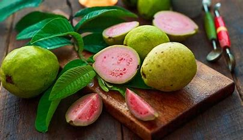

Guava is a common tropical fruit cultivated in many tropical and subtropical regions. The common guava Psidium guajava (lemon guava, apple guava) is a small tree in the myrtle family (Myrtaceae), native to Mexico, Central America, the Caribbean and northern South America. The name guava is also given to some other species in the genus Psidium such as strawberry guava (Psidium cattleyanum) and to the pineapple guava, Feijoa sellowiana. In 2019, 55 million tonnes of guavas were produced worldwide, led by India with 45% of the total. Botanically, guavas are berries.
The term guava appears to have been in use since the mid-16th century. The name derived from the Taíno, a language of the Arawaks as guayabo for guava tree via the Spanish for guayaba. It has been adapted in many European and Asian languages, having a similar form.
Guavas originated from an area thought to extend from Mexico, Central America or northern South America throughout the Caribbean region. Archaeological sites in Peru yielded evidence of guava cultivation as early as 2500 BC. Guava was adopted as a crop in subtropical and tropical Asia, parts of the United States (from Tennessee and North Carolina, southward, as well as the west and Hawaii), tropical Africa, and Oceania. Guavas were introduced to Florida, US in the 19th century and are grown there as far north as Sarasota, Chipley, Waldo and Fort Pierce. However, they are a primary host of the Caribbean fruit fly and must be protected against infestation in areas of Florida where this pest is present. Guavas are cultivated in several tropical and subtropical countries.Several species are grown commercially; apple guava and its cultivars are those most commonly traded internationally. Guavas also grow in southwestern Europe, specifically the Costa del Sol on Málaga, (Spain) and Greece where guavas have been commercially grown since the middle of the 20th century and they proliferate as cultivars. Mature trees of most species are fairly cold-hardy and can survive temperatures slightly colder than −4 °C (25 °F) for short periods of time, but younger plants will likely freeze to the ground. Guavas are of interest to home growers in subtropical areas as one of the few tropical fruits that can grow to fruiting size in pots indoors. When grown from seed, guava trees can bear fruit in two years, and can continue to do so for forty years.